General
Updated 01 Nov 2011
- QuArK Information Base
- 1. Introduction to QuArK
- 1.3. Configuration of QuArK
|
|
General
Updated 01 Nov 2011
|
Upper levels: - QuArK Information Base - 1. Introduction to QuArK - 1.3. Configuration of QuArK |
|
1.3.1. General |
[ - - ] |
|
Index |
|
|
|
Display |
Decker, DanielPharos - 28 Apr 2009 | [ Top ] |
|
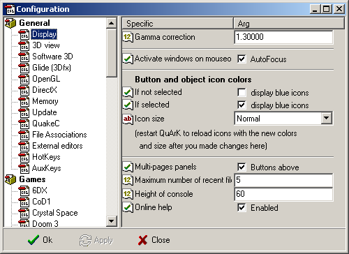 Gamma correction . To adjust the brightness of colors in textures. Activate windows on mouseover . Whether or not you want to have windows auto-activated, when the mouse-pointer is inside them. If not selected and If selected . Affects with what color, blue or brown, icons that are selected, should be shown with. Icon size . The size of the icons in QuArK. Large icons require you to first download the LGIcons pack from the website. Multi-pages panels . Wheter the buttons of the multi-pages panels are displayed below or above the panel. Maximum number of recent files . The maximum number of recently opened files to remember and display in the "Recent files" menu. Height of console . The maximum number of lines of text in the console. Online help . This will cause QuArK to open up the online help when the wanted help file is not available locally. |
|
3D View |
Decker, DanielPharos - 05 Apr 2007 | [ Top ] |
|
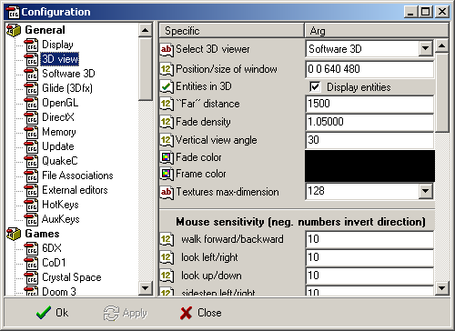 Select 3D viewer . If you have a 3Dfx-compatible 3D-acceleration graphics card, an OpenGL-compatible 3D-acceleration graphics card, or a DirectX 3D-acceleration graphics card installed, QuArK can use it to speed up drawing in all windows. If you don't have one or neither of those work correctly, you can default to Software 3D rendering. Also, other renderers have more features than the Software 3D. Position/size of window . The position and size of the floating 3D- windows. The first two numbers are the X and Y positions of the window, counted in pixels from the upper left corner of the screen. The last two numbers are the width and height of the window, also counted in pixels. Entities in 3D . Whether or not QuArK should draw entities (3D-models) in the 3D-windows. "Far" distance . How deep QuArK should draw in the 3D-windows. Lower values will speed up drawing. Fade density . The lower the fading fog, the more you can see, but keep in mind that the "Far" distance and the fade density are somewhat connected. Vertical view angle . The field of view of the perspective views, in degrees. Just as with cameras expected it is not the width but the height of the view that you enter. Fade color . Want green fading fog? Change it here! Frame color . The color to use on the bounding area of the 3D-windows, where QuArK won't draw due to the choosen size of the view. Texture max-dimension . The maximum width and height of a texture. Software and 3Dfx are limited to a maximum of 256, but this is looked after automatically by QuArK. Also, if you set it too high, QuArK will automatically scale back. Mouse sensitivity All these values controls the mouse sensitivity, when you use your mouse to move around in the 3D-windows. To reverse the direction of any of these settings just change the value to a negative. Keyboard settings Instead of using the mouse to move around with (which can be quite difficult at times), you can either use these standard movement-keys when the 3D-window is active, or redefine them to suit your needs. It is highly recommended that you know how to move around in 3D-window using the keys. Keyboard movement dynamics Change these values if you feel, that moving around using the keys, isn't quite fast or slow enough. You must experiment a bit to find a setting that you like using. Additional settings The next time... . Enables or disables the warning box that shows up when you open the 3D-windows for the first time. Close views when the game is run . When enabled, QuArK will close any 3D-windows and multi-pages panels open when the game is run using the menu. This will reduce the amount of resources QuArK uses, so the game runs more smoothly. Close views when the configurations are changed . When enabled, QuArK will close any 3D-windows and multi-pages panels open when the configurations are changed. This will prevent any of the new settings from not correctly being applied to views that are already open. Allow multiple 3D windows . When enabled, clicking the 3D button will open new floating 3D windows. When disabled, clicking the 3D button will just toggle one view open/closed. Opening more than several windows will slow QuArK down, so use multiple windows with care! |
|
Software 3D |
Decker, DanielPharos - 04 Apr 2007 | [ Top ] |
|
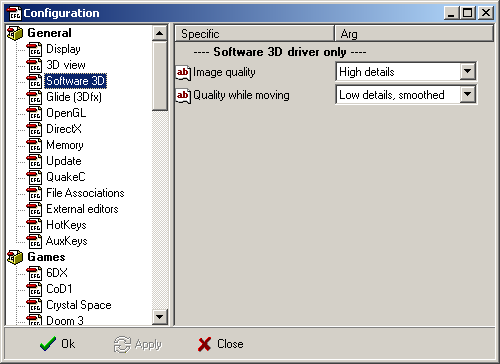 If you have selected 'Software-only' in the 3D-viewer, then you can here change how fast the software-render should be able to draw things in the 3D-window, while standing still and while walking/moving around. Low quality will cut the rendering resolution in half, and smoothed will smooth out the roughness a little. |
|
Glide (3DFX) |
Decker, DanielPharos - 30 Oct 2010 | [ Top ] |
|
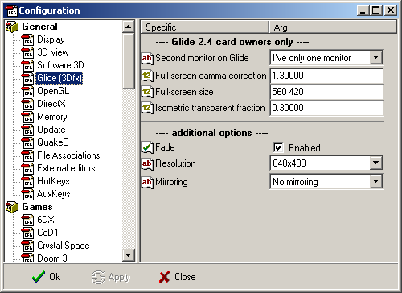 Settings in this folder are only usable if you have a true Glide graphics-card. 3D-accelerators like 3Dfx, Voodoo, Voodoo-II and other low-price cards, are not true OpenGL compatible, they only emulates it through a Glide-driver. Second monitor on Glide . Full-screen gamma correction . Full-screen size . Isometric transparent fraction . Additional options Fade . With this you can enable and disable the fading fog. Resolution . This is the resolution Glide renders at. The higher this setting, the higher the quality, but also the slower the rendering. Mirroring . Allows you to flip the viewport around. Use this if everything renders upside-down. Note: Usage of emulators (such as dgVoodoo) might produce weird effects, and is generally not supported. |
|
OpenGL |
Decker, DanielPharos - 01 Nov 2011 | [ Top ] |
|
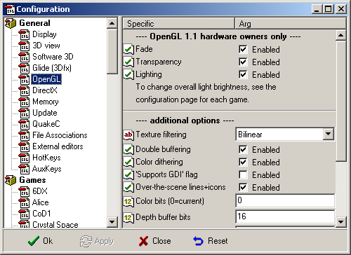 Settings in this folder are only usable if you have a true OpenGL graphics-card. Fade . With this you can enable and disable the fading fog. Transparency . With this you can enable and disable transparency. You might need to enable lighting in order for transparency to be applied. Lighting . With this you can enable and disable the lighting. Additional options Texture filtering . This improved the texture quality, mainly under high angles. It will make the textures appear less blocky and pixelated. The higher the settings, the better the quality, but also the lower the performance. Double buffering . When enabled, OpenGL will render the image offscreen, and then copy it. This will prevent any weird triangular flickering from the rendering being visible. Color dithering . When enabled, OpenGL will dither colors. 'Supports GDI' flag . This will enabled the 'Supports GDI' flag. Over-the-scene lines+icons . This will draw all the lines and icons over the scene. Color bits . The amount of bits per pixel. The higher the number, the better colors will look. Not all numbers are supported. 16, 24 and 32 are common numbers these days. Depth buffer bits . The amount of bits per pixel in the depth buffer. The higher the number, the less chance of objects being rendered overlapping while they're not. Not all numbers are supported. 16 is the most common number these days. Size correction . Corrects misalignments between the image and the wireframe lines over it. For example, Windows NT's software OpenGL is known to require a correction of about 0.92 instead of 1; otherwise, the textured images are smaller than the wireframes. Display lists . When enabled, OpenGL will use display lists. Display lists speed up rendering. However, slight slowdowns might be noticed when changes to the map/model are made, because the lists then need to be rebuild with the updated information. Face culling . Speeds up rendering by making all the backsides of faces invisible. This doesn't apply to transparent faces. Ambient lighting brightness . The ambient lighting brightness. The higher the number, the brighter the ambient lighting. Settings this high enough prevents the scene from being black at places where there are no lights. Lighting quality on faces . This determines how segmented a face can become when lighting is applied to it. The more segments per face, the smoother the lighting will look, at the cost of rendering speed. Lighting quality when not moving . This is the lighting quality that
OpenGL will use when the camera is not moving. This option only has effect
when Lighting is enabled. There are three options: Lighting quality while moving . Same as 'Lighting quality when not moving', but now when moving the camera. Rendering light can take much time, especially in larger scenes with many lights. Disabling lighting when moving will speed up rendering when the camera is moving, and thus make the movement much less jerky. Note: Use a utility like OpenGL Viewer to make sure your video card and video drivers support all the OpenGL features QuArK needs. |
|
DirectX |
DanielPharos - 30 Oct 2010 | [ Top ] |
|
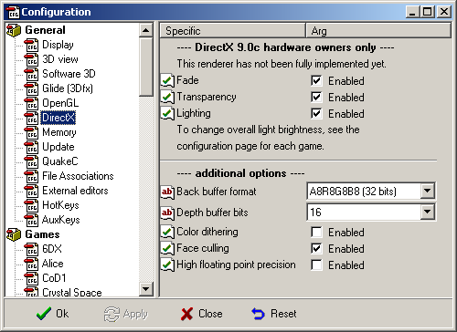 Settings in this folder are only usable if you have a DirectX graphics-card. Fade . With this you can enable and disable the fading fog. Transparency . With this you can enable and disable transparency. You might need to enable lighting in order for transparency to be applied. Lighting . With this you can enable and disable the lighting. Additional options Back buffer format . The format of the back buffer used by DirectX. This is the color format of the pixels. The higher the better the quality, but not all formats might be supported. Depth buffer bits . The amount of bits per pixel in the depth buffer. The higher the number, the less chance of objects being rendered overlapping while they're not. Not all modes might supported. Color dithering . When enabled, DirectX will dither colors. Face culling . Speeds up rendering by making all the backsides of faces invisible. This doesn't apply to transparent faces. High floating point precision . Enabled high precision in floating point calculations. Setting this increases rendering accuracy, but also degrades performance. Note: Use the DirectX Diagnostic Tool to make sure you have the right version of DirectX installed. See this article. |
|
Memory |
DanielPharos - 11 Aug 2008 | [ Top ] |
|
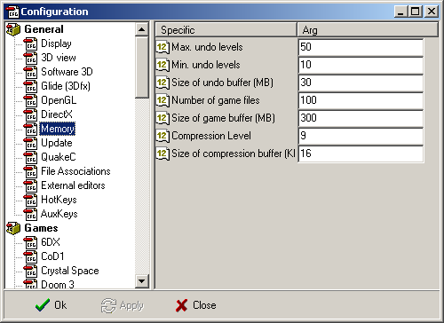 Values in this settings-folder, controls how much memory QuArK are allowed to consume, and the number of undo-levels that it should store. Max. undo levels . This is the maximum number of undo's QuArK will store. Min. undo levels . This is the minimum number of undo's QuArK will store. QuArK will warn if not enough memory for this number of undo's. Size of undo buffer (MB) . Deletes older undo levels if it would take more memory than this. Number of game files . Number of game files to keep in memory. Game files are files loaded from games, and thus includes textures, maps, models and sounds. Size of game buffer (MB) . Size of the memory buffer to allocate while loading game files. Compression Level . Level of Compression to use for zip files (0 .. 9) Size of compression buffer (KB) . Size of memory buffer to allocate when compressing files. |
|
Update |
DanielPharos - 30 Oct 2010 | [ Top ] |
|
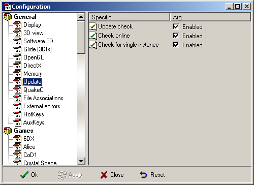 Update check . Enables the update check when starting QuArK. Check online . Check for updates online.
Check for single instance . Enables the check for a single running QuArK (or updater instance) instance on start-up. |
|
QuakeC |
Decker - 28 Feb 2001 | [ Top ] |
|
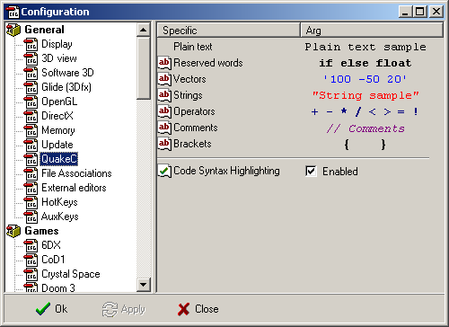 Controls syntax-highlighting in QuakeC source-code. |
|
File associations |
Decker - 28 Feb 2001 | [ Top ] |
|
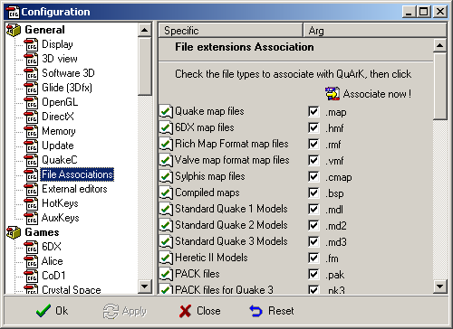 In this folder, you are able to setup which file-extensions should start QuArK, when you double-click on a file in Windows File-Explorer. Some of the file-extensions in this folder, QuArK might not be able to edit yet, but you can always import them into your QuArK-project, and send it to an external editor. |
|
External editors |
Decker - 05 Apr 2007 | [ Top ] |
|
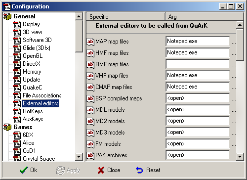 Here you can select your preferred program for editing various file types that QuArK itself won't let you edit. Each box can be empty (no program), or <open> to call Windows' default programs for this file type, or a complete program path to call a specific program. Other commands in square quotes like <edit> may be available depending on the program. If a box is left empty but QuArK knows how to convert to another data type, the conversions are done automatically (e.g. if you leave the .wal box empty but fill the .bmp box, when you want to edit a Quake 2 texture (.wal), QuArK will convert it to .bmp, call your program, and convert it back to .wal after you edited the image). |
|
HotKeys |
DanielPharos - 04 Apr 2007 | [ Top ] |
|
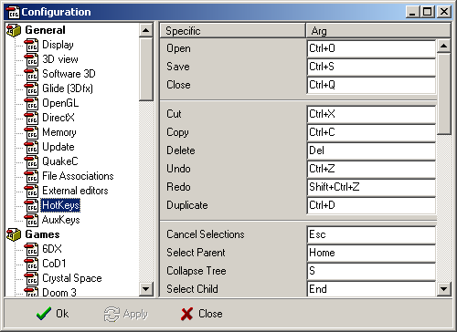 Here you can set the HotKey bindings. Just type in what key or what key combination you want to use for a specific function. |
|
AuxKeys |
DanielPharos - 04 Apr 2007 | [ Top ] |
|
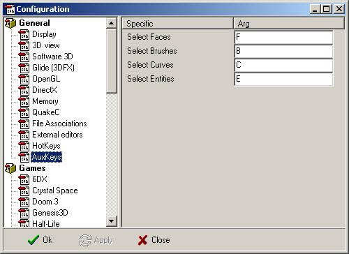 Here you can set the AuxKey bindings. Just type in what key or what key combination you want to use for a specific function. |
|
Multiple monitors |
Raybot - 29 May 2011 | [ Top ] |
|
INTRODUCTION: LAPTOPS (98SE/ME/2k/XP): If your computer is a laptop, it must have a video chip that is itself capable of running 2 monitors (a chip with dualhead capabilities). Examples include the Trident Cyberblade, ATI Rage Mobility M1 (P series only for Win98SE/ME) and the nVidia GeForce2Go and GeForce 4 440Go/420Go. In the case of a laptop, one screen will be the internal flat panel display and one screen will be a monitor plugged into the video out port. You can tell if your laptop supports multimonitor setups by right clicking on the desktop, selecting properties then clicking the settings tab. If you get 2 screens (1 will be grayed out) then your video chip supports multimonitors. If this is not the case, try it with the newest drivers you can find, either from the maker of the laptop or from the maker of the video chip that the laptop uses. Note that for some reason, this multi monitor ability is rarely advertised in the laptop manual or promotional material. If your laptop's inbuilt display adapter doesn't support multiple monitors or you want to run 3 screens and you have a PCI docking station, you can often still run multiple monitors by using a PCI video card in the docking station, in similar way to a desktop as outlined below. Examples of laptops where this has been reported to work include the Dell Latitude series with PCI docking stations. DESKTOPS: DESKTOPS - WINDOWS 98SE/ME: Under Windows 98 and ME, the display adapter that will drive your primary display (the one that 3D games will drop into for instance) is the display adapter that your BIOS screen boots on. You can select this normally in the PnP section of your BIOS (yes its a weird place to put it but that's where its put usually). Look for an option that you can toggle from PCI to AGP. In most cases, you will want to leave this as AGP. When you get into Windows, simply install the drivers for your other cards as you would normally, reboot and the next time you go into Windows you should see in the settings tab of the display properties aplet one or more grayed out screens which you can enable using the 'extend desktop' check box. Once enabled, you can drag the screens around in the aplet to match your physical configuration. DESKTOPS - WINDOWS 2K/XP: Under Windows 2000 (and presumably XP), you can switch your primary display adapter on the fly so you don't need to boot off the display adapter that you wish to run your 3D games and single monitor applications on. However, there is a different problem, being that there are very few older PCI video cards that Windows 2000 and XP can initialize after bootup (Microsoft's knowledge base unhelpfully states that the video card needs to have a 'disable VGA' switch and you need to turn this off - I've only seen 1 video card with this, a Matrox MGA-2064W, and it only works with this switch ON!). As a result, generally you will need to set a PCI video card to boot in the BIOS then get Windows 2000 to initialize your AGP video card once the desktop appears. If you want a 3rd monitor or if you must boot off your AGP card (for instance your BIOS doesn't allow you to change it, as is common on motherboards with onboard display adapters), you will need to find a video card that supports Windows 2000 dual monitors. Examples include Matrox video cards and newer nVidia-based video cards. Once you've found a combination of video cards that works, you can install them then use the 'extend desktop' check box in the settings tab of the display properties aplet to enable them. Again, once enabled you can drag the screens around in the aplet to match your physical configuration. Also note that there is a 'primary monitor' check box which you use to select which monitor will show single-monitor mode programs such as 3D games. For more information on other issues, as well as listings of combinations of video cards that users have had success with, see www.realtimesoft.com/multimon . |
|
Copyright (c) 2009, GNU General Public License by The QuArK (Quake Army Knife) Community - http://quark.sourceforge.net/ |
[ - Top - ] |